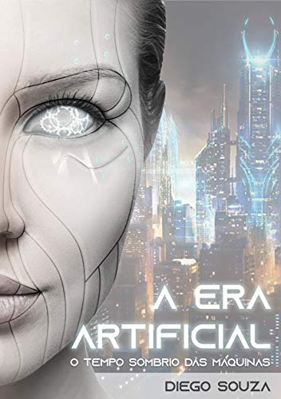

A ERA ARTIFICIAL
Um futuro sombrio a nosso caminho.

A história em que a inteligência artificial permitiu aos robôs se tornarem a espécie dominante do nosso planeta. Uma luta incessante pela sobrevivência humana tem início em um cenário catastrófico dominado pela guerra e pelo caos.
COMPRARUMA HISTÓRIA INTENSA
A Era Artificial — O Tempo Sombrio das Máquinas deixa o leitor apreensivo com algumas situações que ocorrem em um cenário catastrófico tomado pela destruição.
E isso o leva a refletir: veremos um dia a tão temida singularidade tecnológica?
INFORMAÇÕES SOBRE O AUTOR
Diego Souza é apaixonado por tecnologia e trabalha com Desenvolvimento Web. Também é um eterno fã de ficção científica e escritor nas horas vagas. Carioca da gema, ama o Rio de Janeiro, cidade onde nasceu.
O livro A Era Artificial apresenta um cenário apocalíptico no qual os robôs alcançaram sua independência e com isso se tornaram a espécie dominante do planeta. De que forma a humanidade pode enfrentar esse poderoso inimigo?
Esses e mais detalhes podem ser vistos na história de ficção científica que promete fazer você refletir sobre o futuro da humanidade!
COMPRAR